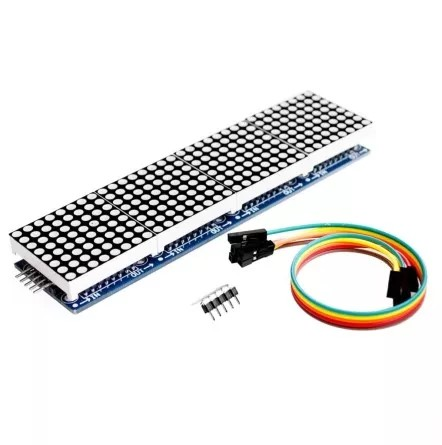

Arduino
Arduino Application
Open Source
Open source products include permission to use the source code, design documents, or content of the product. It most commonly refers to the open-source model, in which open-source software or other products are released under an open-source license as part of the open-source-software movement. Use of the term originated with software, but has expanded beyond the software sector to cover other open content and forms of open collaboration.
wikipedia
Arduino Open Source Hardware Arduino has over the years released over 100 hardware products: boards, shields, carriers, kits and other accessories. In this page, you will find an outline of some active Arduino hardware.
Kits
Arduino has over the years released over 100 hardware products: boards, shields, carriers, kits and other accessories. In this page, you will find an overview of some active Arduino hardware.
The classic Starter Kit
Quickly and easily get started with learning electronics using the Arduino Starter Kit, which have a universal appeal to STEM fans at home, businesses in STEAM industries, and schools alike. No prior experience is required, as the kits introduce both coding and electronics through fun, engaging, and hands-on projects. You can use the starter kit to teach students about current, voltage, and digital logic as well as the fundamentals of programming. There’s an introduction to sensors and actuators and how to understand both digital and analog signals. Within all this, you’ll be teaching students how to think critically, learn collaboratively, and solve problems.

Arduino Sensor Kit
The Arduino Sensor Kit is made for Makers who have just started using Arduino to explore the vast space of electronics and programming. This kit teaches how to connect and program basic Grove modules that includes both sensors and actuators.
Classic Family
In the Classic Family, you'll encounter iconic boards like the legendary Arduino UNO, as well as other enduring classics such as the Leonardo and Micro. These boards represent the foundational pillars of the Arduino project and have enjoyed sustained success over many years, with a promising future ahead. Boards
Open source hardware, refers to the design specifications of a physical object which are licensed in such a way that said object can be studied, modified, created, and distributed by anyone.
Check here for more about Arduino Hardware
Click here for the basics about Arduino and download software
About Arduino
Arduino can sense the environment throught a variety of sensors, and feedback and influence the environment by controlling lights,motors and other devices. The microcontroller on the board can be programmed in the Arduino programming language, compiled into binary files. The programm is implemented using the Arduino programming language (based on wiring) and the Arduino development environment (based on processing). Arduino based projects can include only Arduino, or they can include Arduino and some other software running on a PC, and they communicate with each other (such as Flash, Processing, MaxMSP) to achieve.
Open Source Software
An Open-source software is a program that has publicly available code which anyone with technical expertise can use, modify and distribute. These types of software solutions don't always solve the same problems. In fact, most open-source software is geared towards different niche solutions. However, because it is accessible to the general public, it is typically very easy to obtain and incorporate into digital solutions. Now, it is important to remember that just because open source software is free to use, it doesn't mean that just anyone can use it. Open-source software refers to lines of code (and its variations) that are available. So, depending on the type of this software, you'll likely still need a qualified software developer to inspect that code, customize the software to your specifications, and integrate it into your current operations. Open source Hardware wikipedia
Arduino board installation
1. Prepare equipment: First, you must have an Arduino board (you can choose the board you like) and a USB cable. If you use an Arduino UNO, Arduino Duemilanove, Nano, Arduino Mega 2560 or Diecimila, you will need a standard USB cable (A plug to B plug).2. Download the Arduino IDE software: You can get different versions of Arduino IDE from the download page of the official Arduino website. You must choose software that is compatible with your operating system (Windows, iOS or Linux). After the file download is complete, unzip the file.
3. Power on the board: You can get different versions of Arduino IDE from the download page of the official Arduino website. You must choose software that is compatible with your operating system (Windows, iOS or Linux). After the file download is complete, unzip the file.
4. Start the Arduino IDE: After downloading the Arduino IDE software, you need to unzip the folder. In the folder you can find the application icon with the infinity label (application.exe). Double-click the icon to launch the IDE.
5. Open your first project: Once the software starts, you have two options:
• Create a new project.
• Open an existing project example.
• To create a new project, select Flie→New
Arduino Control
Arduino IDEThe Arduino Integrated Development Environment - or Arduino Software(IDE) - contains a text editor for writing code, a message area, a text console, a toolbar with buttons for common functions and a series of menus. It connects to the Arduino hardware to upload programs and communicate with them.
Writing Sketches
Programs written using Arduino Software (IDE) are called sketches. The Arduino Software (IDE) provides a user-friendly environment for writing and managing sketches, which are the programs that run on Arduino boards. Here's a concise summary of its key features and functions:
Sketches: Arduino programs are known as sketches and are saved with the ".ino" file extension. These sketches are created and edited in the IDE's text editor.
Text Editor: The IDE's text editor offers features for tasks like copying, pasting, and searching/replacing text within your sketches.
Message Area: This area provides feedback during actions like saving and exporting sketches and also displays error messages when they occur.
Console: The console displays text output generated by the Arduino Software (IDE), including comprehensive error messages and other relevant information.
Configuration Information: In the bottom right-hand corner of the IDE window, you can see details about the configured board and serial port.
Toolbar Buttons:
• "Verify" checks your code for errors during compilation.
• "Upload" compiles your code and uploads it to the selected Arduino board.
• The "New" button creates a new, blank sketch.
• "Open" presents a menu of sketches in your sketchbook for opening, overwriting the current content if selected.
• The "Save" button saves your currently open sketch.
• "Serial Monitor" opens a window for monitoring serial communication with the connected Arduino board.
The IDE features five main menus - File, Edit, Sketch, Tools, and Help. These menus offer additional commands for various tasks. The options within these menus are context-sensitive, meaning they change based on the current task or context, providing relevant choices for your work.

File
• New Creates a new instance of the editor, with the bare minimum structure of a sketch already in place.
• Open Allows to load a sketch file browsing through the computer drives and folders.
• Open Recent Provides a short list of the most recent sketches, ready to be opened.
• Sketchbook Shows the current sketches within the sketchbook folder structure; clicking on any name opens the corresponding sketch in a new editor instance.
• Examples Any example provided by the Arduino Software (IDE) or library shows up in this menu item. All the examples are structured in a tree that allows easy access by topic or library.
• Close Closes the instance of the Arduino Software from which it is clicked.
• Save Saves the sketch with the current name. If the file hasn't been named before, a name will be provided in a "Save as.." window.
• Save as... Allows to save the current sketch with a different name.
• Page Setup It shows the Page Setup window for printing.
• Print Sends the current sketch to the printer according to the settings defined in Page Setup.
• Preferences Opens the Preferences window where some settings of the IDE may be customized, as the language of the IDE interface.
• Quit Closes all IDE windows. The same sketches open when Quit was chosen will be automatically reopened the next time you start the IDE.
Edit
• Undo/Redo Goes back of one or more steps you did while editing; when you go back, you may go forward with Redo.
• Cut Removes the selected text from the editor and places it into the clipboard.
• Copy Duplicates the selected text in the editor and places it into the clipboard.
• Copy for Forum Copies the code of your sketch to the clipboard in a form suitable for posting to the forum, complete with syntax coloring.
• Copy as HTML Copies the code of your sketch to the clipboard as HTML, suitable for embedding in web pages.
• Paste Puts the contents of the clipboard at the cursor position, in the editor.
• Select All Selects and highlights the whole content of the editor.
• Comment/Uncomment Puts or removes the // comment marker at the beginning of each selected line.
• Increase/Decrease Indent Adds or subtracts a space at the beginning of each selected line, moving the text one space on the right or eliminating a space at the beginning.
• Find Opens the Find and Replace window where you can specify text to search inside the current sketch according to several options.
• Find Next Highlights the next occurrence - if any - of the string specified as the search item in the Find window, relative to the cursor position.
• Find Previous Highlights the previous occurrence - if any - of the string specified as the search item in the Find window relative to the cursor position.
Sketch
• Verify/Compile Checks your sketch for errors compiling it; it will report memory usage for code and variables in the console area.
• Upload Compiles and loads the binary file onto the configured board through the configured Port.
• Upload Using Programmer This will overwrite the bootloader on the board; you will need to use Tools > Burn Bootloader to restore it and be able to Upload to USB serial port again. However, it allows you to use the full capacity of the Flash memory for your sketch. Please note that this command will NOT burn the fuses. To do so a Tools -> Burn Bootloader command must be executed.
• Export Compiled Binary Saves a .hex file that may be kept as archive or sent to the board using other tools.
• Show Sketch Folder Opens the current sketch folder.
• Include Library Adds a library to your sketch by inserting #include statements at the start of your code. For more details, see libraries below. Additionally, from this menu item you can access the Library Manager and import new libraries from .zip files.
• Add File... Adds a supplemental file to the sketch (it will be copied from its current location). The file is saved to the data subfolder of the sketch, which is intended for assets such as documentation. The contents of the data folder are not compiled, so they do not become part of the sketch program.
Tools
• Auto Format This formats your code nicely: i.e. indents it so that opening and closing curly braces line up, and that the statements inside curly braces are indented more.
• Archive Sketch Archives a copy of the current sketch in .zip format. The archive is placed in the same directory as the sketch.
• Fix Encoding & Reload Fixes possible discrepancies between the editor char map encoding and other operating systems char maps.
• Serial Monitor Opens the serial monitor window and initiates the exchange of data with any connected board on the currently selected Port. This usually resets the board, if the board supports Reset over serial port opening.
• Board Select the board that you're using. See below for descriptions of the various boards.
• Port This menu contains all the serial devices (real or virtual) on your machine. It should automatically refresh every time you open the top-level tools menu.
• Programmer For selecting a hardware programmer when programming a board or chip and not using the onboard USB-serial connection. Normally you won't need this, but if you're burning a bootloader to a new microcontroller, you will use this.
• Burn Bootloader The items in this menu allow you to burn a bootloader onto the microcontroller on an Arduino board. This is not required for normal use of an Arduino board but is useful if you purchase a new ATmega microcontroller (which normally come without a bootloader). Ensure that you've selected the correct board from the Boards menu before burning the bootloader on the target board. This command also set the right fuses.
Help
• Here you find easy access to a number of documents that come with the Arduino Software (IDE). You have access to Getting Started, Reference, this guide to the IDE and other documents locally, without an internet connection. The documents are a local copy of the online ones and may link back to our online website.
• Find in Reference This is the only interactive function of the Help menu: it directly selects the relevant page in the local copy of the Reference for the function or command under the cursor. Sketchbook
• The Arduino Software (IDE) uses the concept of a sketchbook: a standard place to store your programs (or sketches). The sketches in your sketchbook can be opened from the File > Sketchbook menu or from the Open button on the toolbar. The first time you run the Arduino software, it will automatically create a directory for your sketchbook. You can view or change the location of the sketchbook location from with the Preferences dialog.
• Beginning with version 1.0, files are saved with a .ino file extension. Previous versions use the .pde extension. You may still open .pde named files in version 1.0 and later, the software will automatically rename the extension to .ino.
• Tabs, Multiple Files, and Compilation Allows you to manage sketches with more than one file (each of which appears in its own tab). These can be normal Arduino code files (no visible extension), C files (.c extension), C++ files (.cpp), or header files (.h).
• Before compiling the sketch, all the normal Arduino code files of the sketch (.ino, .pde) are concatenated into a single file following the order the tabs are shown in. The other file types are left as is.
Uploading
• Before uploading your sketch, you need to select the correct items from the Tools > Board and Tools > Port menus. The boards are described below. On the Mac, the serial port is probably something like /dev/tty.usbmodem241 (for an UNO or Mega2560 or Leonardo) or /dev/tty.usbserial-1B1 (for a Duemilanove or earlier USB board), or /dev/tty.USA19QW1b1P1.1 (for a serial board connected with a Keyspan USB-to-Serial adapter). On Windows, it's probably COM1 or COM2 (for a serial board) or COM4, COM5, COM7, or higher (for a USB board) - to find out, you look for USB serial device in the ports section of the Windows Device Manager. On Linux, it should be /dev/ttyACMx , /dev/ttyUSBx or similar. Once you've selected the correct serial port and board, press the upload button in the toolbar or select the Upload item from the Sketch menu. Current Arduino boards will reset automatically and begin the upload. With older boards (pre-Diecimila) that lack auto-reset, you'll need to press the reset button on the board just before starting the upload. On most boards, you'll see the RX and TX LEDs blink as the sketch is uploaded. The Arduino Software (IDE) will display a message when the upload is complete, or show an error.
• When you upload a sketch, you're using the Arduino bootloader, a small program that has been loaded on to the microcontroller on your board. It allows you to upload code without using any additional hardware. The bootloader is active for a few seconds when the board resets; then it starts whichever sketch was most recently uploaded to the microcontroller. The bootloader will blink the on-board (pin 13) LED when it starts (i.e. when the board resets).
Libraries
• Libraries provide extra functionality for use in sketches, e.g. working with hardware or manipulating data. To use a library in a sketch, select it from the Sketch > Import Library menu. This will insert one or more #include statements at the top of the sketch and compile the library with your sketch. Because libraries are uploaded to the board with your sketch, they increase the amount of space it takes up. If a sketch no longer needs a library, simply delete its #include statements from the top of your code.
• There is a list of libraries in the reference. Some libraries are included with the Arduino software. Others can be downloaded from a variety of sources or through the Library Manager. Starting with version 1.0.5 of the IDE, you do can import a library from a zip file and use it in an open sketch. See these instructions for installing a third-party library.
Reference
NexmakerSimulation

Tinkercad Circuits
The Circuits editor in Tinkercad is a user-friendly and powerful tool that allows you to create, simulate, and experiment with electronic circuits in a virtual environment. It's part of Autodesk's Tinkercad suite of tools designed for students, and electronics enthusiasts. Tinkercad Circuits is an excellent tool for learning and experimenting with electronics and circuit design, whether you're a beginner or an experienced engineer. It's a valuable resource for prototyping and testing ideas before moving to physical hardware, and it's accessible through a web browser, making it convenient for a wide range of users.
In Tinkercad's dashboard, you can conveniently manage and create various types of designs, including 3D designs, Codeblocks (for coding), and Circuits (for electronic circuits). Here's a breakdown of the process and the layout of the Circuits editor:
Dashboard Overview: Go to Tinkercad's website and log in or create an account if you don't have one. When you access your Tinkercad dashboard, you'll see a list of your existing designs, organized by type (3D, Codeblocks, Circuits). You can scroll through your designs to find the one you want to work on.
Creating a New Design: To create a new design in the Circuits editor, click on the "Design" and then click the "Create" option after that select “Circuit”. This action allows you to start a fresh circuit project.

The Circuits editor in Tinkercad is organised similarly to its 3D design editor. You'll discover a sizable window for designing our layout on the left. A panel containing parts we can drag and drop onto the workspace to build our circuit is visible on the right side.
We can also zoom in and out of our design by using the scroll wheel on our mouse, a two-finger gesture on our trackpad, or a key combination of Command + and Command -.
A “Zoom to fit” button is located in the top left corner of the workspace, which will center and zoom your design to fill the window. Pressing the letter F on your keyboard works as a handy shortcut for this same command.
Access Tutorials: Tinkercad offers a range of tutorials to help you learn how to use its 3D design, Codeblocks, and Circuits editors effectively. Tutorials are valuable resources for beginners and can also provide tips and tricks for more experienced users.
• From your dashboard you'll typically find a "Tutorials" option in the top menu bar or on the sidebar. Click on it to access the available tutorials. Browse through the list of tutorials to find a topic that interests you or is relevant to your current project.
• Click on the tutorial title to open and start the tutorial.
• The tutorial will provide step-by-step instructions, often with interactive elements to guide you through the learning process.
• You'll typically have tasks to complete, and the tutorial will help you understand the features and tools of the chosen editor.
• Work through the tutorial, following the instructions provided. This may involve creating a simple project or learning how to use specific features or tools within the editor.
Tinkercad's tutorials are designed to help you learn by doing. You can experiment with the concepts you've learned and apply them to your own projects. Tinkercad often offers a variety of tutorials covering different aspects of the editor. Feel free to explore more tutorials to expand your skills and knowledge.

Learning Basic Circuits Tinkercad is more than just a platform for exploring electronics. We include a selection of interactive lessons that students can use to learn electronics at their own pace.
The hub for all Tinkercad Circuits instructional content can be found on our Tinker > Circuits page, accessible from the top navigation bar of our design dashboard.
Scrolling down on the Circuits page allows we can dive into lessons with varying degrees of difficulty and can try more tutorial
Arduino class works
Switch
We can use swith to control the circuit, in this case we use pin 7 as input port
Its a simple Led blinker using Arduino. In this example which is includes simple code that we can view, simulate, and modify. When the simulation is off the point Red and Green Led is also off. When we select “Start Simulation” the point Green Led will turn on Because Simulation is ON.
Arduino with LCD Screen
In Tinkercad Circuits, you can simulate an Arduino with an LCD screen to create projects that display information in a visual format.Components Needed:
• Arduino Uno
• LCD screen
• Potentiometer
• Jumper wires
Steps:
Access Tinkercad Circuits:• Create a new circuit.
Drag and Drop Components:
• From the components panel, drag an Arduino Uno and a 16x2 LCD screen onto the workspace.
Connect Arduino and LCD:
• Connect the components using jumper wires.
• Connect the VCC and GND of the LCD to the 5V and GND of the Arduino.
• Connect the SDA and SCL of the LCD to the corresponding pins on the Arduino.
Add Potentiometer for Contrast:
• Drag a potentiometer onto the workspace.
• Connect one leg of the potentiometer to 5V, the other to GND, and the middle leg to the VO (contrast) pin on the LCD.
Write Arduino Code:
• Click on the Arduino Uno to open the code editor.
• Write code to initialize the LCD, set up the contrast using the potentiometer, and display information.
#include < LiquidCrystal.h>
// initialize the library with the numbers of the interface pins
LiquidCrystal lcd(12, 11, 5, 4, 3, 2);
void setup() {
// set up the LCD's number of columns and rows:
lcd.begin(16, 2);
// Print a message to the LCD.
lcd.print("hello, world!");
}
void loop() {
// set the cursor to column 0, line 1
// (note: line 1 is the second row, since counting begins with 0):
lcd.setCursor(0, 1);
// print the number of seconds since reset:
lcd.print(millis() / 1000);
}
Simulate and Test:
• Click "Start Simulation" to see how your LCD displays the message.
• Adjust the potentiometer to change the contrast.
This basic setup allows you to simulate an Arduino with an LCD screen in Tinkercad Circuits.
Arduino board with LCD screen
LCD1602, or 1602 character-type liquid crystal display, is a kind of dot matrix module to show letters, numbers, and characters and so on. It’s composed of 5x7 or 5x11 dot matrix positions; each position can display one character. There’s a dot pitch between two characters and a space between lines, thus separating characters and lines. The model 1602 means it displays 2 lines of 16 characters.
In this section, we will use LCD and Arduino to display some letters and scroll round and round.
Connect Uno and LCD as the following picture. The potentiometer is to tune screen contrast.
Upload the code below:
#include < Wire.h>
#include < LiquidCrystal_I2C.h>
int lcd_Columns = 16; // Number of columns in display
int lcd_Rows = 2; // Number of Rows in display
LiquidCrystal_I2C lcd(0x27, lcd_Columns, lcd_Rows);
// set the LCD address and number of Rows and Columns
String text = "TomorrowsWonderTeam"; // Put your required Text here
int speed_Adjust = 300; // Speed of moving Text
int rest_Time = 400; // Resting time of Text animation at the edges of display
int text_Len; // Variable to save text length
void setup()
{
lcd.init(); // initialize the lcd
lcd.backlight(); // Turn on the LCD backlight
lcd.clear(); // Clear the display
text_Len = text.length(); // Finding the number of characters in the Text
}
void loop()
{
for (int j = 0; j < lcd_Rows; j++) {
for (int i = 0; i < (lcd_Columns - text_Len + 1); i++) {
lcd.clear();
lcd.setCursor(i, j);
lcd.print(text);
delay(speed_Adjust);
}
delay(rest_Time);
for (int i = (lcd_Columns - text_Len); i > -1; i--) {
lcd.clear();
lcd.setCursor(i, j);
lcd.print(text);
delay(speed_Adjust);
}
delay(rest_Time);
}
for (int j = lcd_Rows - 1; j >= 0; j--) {
lcd.clear();
lcd.setCursor(0, j);
lcd.print(text);
delay(speed_Adjust);
}
delay(rest_Time);
}
#include < Wire.h>
#include < LiquidCrystal_I2C.h>
int lcd_Columns = 16; // Number of columns in display
int lcd_Rows = 2; // Number of Rows in display
LiquidCrystal_I2C lcd(0x27, lcd_Columns, lcd_Rows); // set the LCD address and number of Rows and Columns
String text = "TomorrowsWonderTeam"; // Put your required Text here
int speed_Adjust = 300; // Speed of moving Text
int rest_Time = 400; // Resting time of Text animation at the edges of display
int text_Len; // Variable to save text length
void setup()
{
lcd.init(); // initialize the lcd
lcd.backlight(); }
1. Ensure that the required library, in this case, "LiquidCrystal_I2C," is correctly installed in your Arduino IDE.
You can install the library by going to "Sketch" > "Include Library" > "Manage Libraries" and then searching for the "LiquidCrystal_I2C" library. Make sure it is installed and up-to-date.
2. Verify that the library is correctly included in your sketch. In your code, you should have an `#include` statement for the "LiquidCrystal_I2C.h" library at the beginning of your sketch. Make sure this statement is correctly spelled and matches the library's name.

References
https://docs.arduino.cc/hardware/uno-rev3
http://www.taichi-maker.com/homepage/reference-index/arduino-library-index/liquidcrystal-library/
https://www.arduino.cc/reference/en/libraries/liquidcrystal/
Arduino 1 in 4 LED
Step 1: Material Preparation
The pictues below shows the component needed In this tutorial:

MAX7219 Dot Matrix (4 in 1)
 Female to male Jumper Wire
Arduino UNO + Cable
Female to male Jumper Wire
Arduino UNO + Cable
Step 2: Hardware Installation
Connect ARDUINO to Pc Type A or BThe diagram above shows the connection between MAX7219 Dot Matrix Module and Arduino Uno by using jumper wire. The detailed connection will be mentioned below:
VCC --> +5V
GND --> GND
DIN (DATA PIN) -->11
CS PIN --> 10
CLK PIN --> 13
After completing the connection, simply connect Arduino Uno to power supply/PC via USB Cable Type A to B.
Step 3: Source Code:
https://content.instructables.com/FEA/M3YY/JQWT0SFO
Step 4: Uploading
After open the code in Arduino IDE, go to the [Tools] --> [Boards Manager] --> select [Arduino/Genuino UNO] as we using Arduino UNO in this tutorial.
Then connecting the Arduino UNO to PC, after that select the correct port (go to [Tools] --> [Port] --> Select correct port for Arduino UNO).
Next, compile and upload the code into your Arduino UNO.